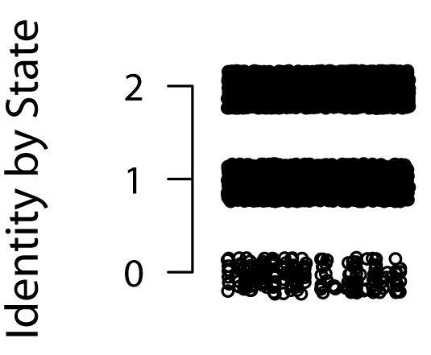
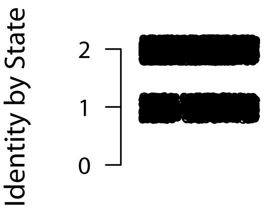
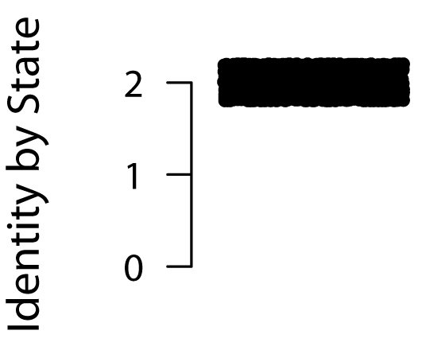
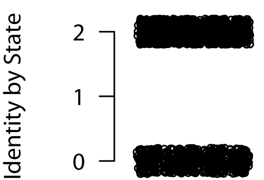

|
|
|
There are four basic IBS track patterns commonly seen in SNPduoWeb data.

The first type is the IBS-0 pattern, which consists of three overlaid tracks, showing a mix of IBS-0, IBS-1, and IBS-2 classifications. The track densities are actually quite different; the IBS-2 track will have the highest density, followed by IBS-1, then IBS-0 (which is apparent visually). This pattern is expected for individuals considered "unrelated" to one another. This pattern also can occur in parent-child comparisons where the child has a de novo deletion on the allele inherited from that parent.

The IBS-1 pattern consists of two overlaid tracks: IBS-1 and IBS-2. Track densities differ within this pattern as well, with a higher density on the IBS-2 track. A pattern of IBS-1 across the entire genome (possibly excluding the X chromosome) is seen in the comparison of parent-child pairings, since the parent passes one allele to the child. This pattern is also seen in higher degree relationships (grandparent-grandchild, avuncular, half-sibs, first-cousins, second-cousins, etc.), but the regions become progressively smaller the further the two individuals are removed from a common ancestor.

Third is the IBS-2 pattern. Only one track, the IBS-2 track, is present in this pattern. It represents genomic segments where both alleles, i.e. both chromosome copies, are shared identically between both individuals. This pattern might be seen, for example, in the comparison of identical siblings. An individual compared to themselves from separate genotyping experiments would show this pattern. Biologically this is seen segmentally in siblings as well, as occasionally both siblings receive the same chromosomal segments from each parent. The pattern is seen in areas of population autozygosity, as the locus has become homogenized by inbreeding.

The final pattern consists of two overlaid tracks: IBS-2 and IBS-0. For this pattern to occur both individuals must be homozygous in region, and the remaining genomic segment must be non-identical. This is most common when comparing two males for the X chromosome, since both individuals are homozygous.
Homozygous deletions are more problematic to visualize on SNPduo. These areas tend to be high in uncalled SNP alleles, and uncalled alleles are not plotted on the SNPduoWeb track. However, a pattern where SNPduoWeb points disappear in the same region that clustered uncalled alleles appear can indicate a possible homozygous deletion.
| Back | Return to the SNPduoWeb homepage |
| Home | Return to the Pevsner Lab Homepage |